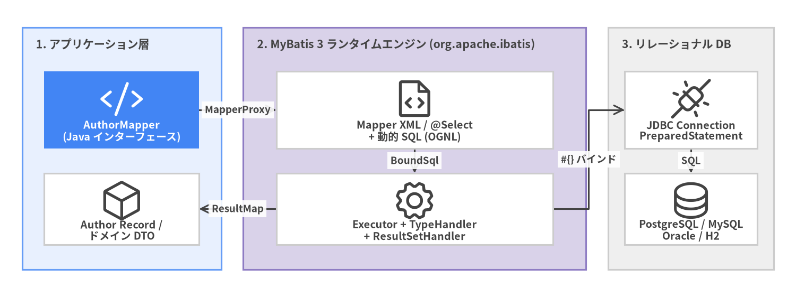
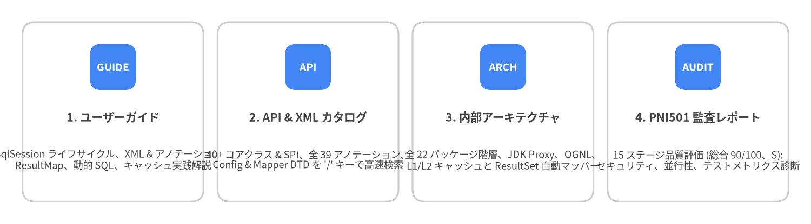

MyBatis 3 ユーザーガイド & ビジュアルドキュメントスイート
PNI501 と Drawlib で構築した、Java 向け SQL ファースト永続化フレームワーク MyBatis 3 (v3.6.0) の非公式ビジュアルドキュメント & エンジニアリング診断スイートへようこそ。
SQL を独自のオブジェクトクエリ言語の背後に隠蔽するフル機能 ORM とは異なり、MyBatis は XML または Java アノテーションを介して Java メソッドと手書きの SQL 文を直接結びつけつつ、素の JDBC における PreparedStatement のパラメータバインドや ResultSet の展開ボイラープレートをほぼ 100% 排除します。

Source Code
from drawlib.canvas import save, setup
from drawlib.diagrams.architecture import ArchitectureDiagram, Node, NodeGroup, PhosphorIcon
from drawlib.styles import Colors, Styles
setup(width=144, height=54, dpi=150)
d = ArchitectureDiagram(
node_style=Styles.Dark,
node_text_style=Styles.DarkBold.patch(text_size=9.5),
edge_style=Styles.Dark.patch(line_width=1.5),
edge_text_style=Styles.DarkBold.patch(text_size=9.0),
node_card_style=Styles.Neutral.patch(shape_fill_color=Colors.White),
)
app = d.add(
NodeGroup(
"1. アプリケーション層",
width=36,
height=44,
style=Styles.PrimaryNeutral,
text_style=Styles.DarkBold.patch(text_size=10.2, halign="left", valign="top"),
),
xy=(4, 5),
)
n_if = app.add(
Node(
"AuthorMapper\n(Java インターフェース)",
icon=PhosphorIcon.CODE,
width=28,
height=14,
style=Styles.White,
text_style=Styles.WhiteBold.patch(text_size=9.5),
card_style=Styles.PrimaryFlat,
),
xy=(18, 29),
)
n_rec = app.add(Node("Author Record /\nドメイン DTO", icon=PhosphorIcon.CUBE, width=28, height=13), xy=(18, 11))
core = d.add(
NodeGroup(
"2. MyBatis 3 ランタイムエンジン (org.apache.ibatis)",
width=62,
height=44,
style=Styles.SecondaryNeutral,
text_style=Styles.DarkBold.patch(text_size=10.2, halign="left", valign="top"),
),
xy=(44, 5),
)
n_xml = core.add(Node("Mapper XML / @Select\n+ 動的 SQL (OGNL)", icon=PhosphorIcon.FILE_CODE, width=50, height=14), xy=(31, 29))
n_exe = core.add(Node("Executor + TypeHandler\n+ ResultSetHandler", icon=PhosphorIcon.GEAR, width=50, height=13), xy=(31, 11))
db = d.add(
NodeGroup(
"3. リレーショナル DB",
width=30,
height=44,
style=Styles.Neutral,
text_style=Styles.DarkBold.patch(text_size=10.2, halign="left", valign="top"),
),
xy=(110, 5),
)
n_jdbc = db.add(Node("JDBC Connection\nPreparedStatement", icon=PhosphorIcon.PLUGS_CONNECTED, width=24, height=14), xy=(15, 29))
n_sql = db.add(Node("PostgreSQL / MySQL\nOracle / H2", icon=PhosphorIcon.DATABASE, width=24, height=13), xy=(15, 11))
n_if.connect(n_xml, label="MapperProxy")
n_xml.connect(n_exe, label="BoundSql")
n_exe.connect(n_jdbc, label="#{} バインド")
n_jdbc.connect(n_sql, label="SQL")
n_exe.connect(n_rec, label="ResultMap")
d.draw(xy=(0, 0))
save()
4 ポータル構成ドキュメントスイート
本サイトは、実践的な使い方・API リファレンス・内部設計・品質監査の 4 つのポータルで構成されています。
| ポータル | 対象と収録内容 | URL |
|---|---|---|
| 1. ユーザーガイド (現在のポータル) | 実践チュートリアル、XML / アノテーション設計、動的 SQL、<resultMap>、キャッシュ、トランザクション、プラグイン |
/ja/ |
| 2. API & XML リファレンスカタログ | すべてのパブリック Java クラス・インターフェース・アノテーション・XML DTD 要素を / キーで即座に検索 |
/api/ja/ |
| 3. 内部アーキテクチャガイド | MapperProxy、CachingExecutor、DynamicSqlSource、DefaultResultSetHandler のソースコードレベル詳細解説 |
/architecture/ja/ |
| 4. PNI501 診断レポート | 全 15 ステージの自動 & 専門アーキテクチャ監査レポート (総合スコア 90/100、グレード S、HTML & PDF) |
/reports/pni501/ |

Source Code
from drawlib.canvas import save, setup
from drawlib.smartarts import CardList
from drawlib.styles import Colors, Styles
setup(width=144, height=40, dpi=150)
cards = CardList(
style=Styles.Neutral.patch(shape_fill_color=Colors.White),
text_style=Styles.DarkBold.patch(text_size=10.2),
description_style=Styles.Dark.patch(text_size=8.8),
badge_shape="rounded_rect",
badge_style=Styles.PrimaryFlat,
badge_text_style=Styles.WhiteBold.patch(text_size=9.2),
direction="horizontal",
spacing=2.5,
)
cards.add(
"1. ユーザーガイド",
"SqlSession ライフサイクル、XML & アノテーション、\nResultMap、動的 SQL、キャッシュ実践解説",
badge_text="GUIDE",
)
cards.add(
"2. API & XML カタログ",
"40+ コアクラス & SPI、全 39 アノテーション、\nConfig & Mapper DTD を '/' キーで高速検索",
badge_text="API",
)
cards.add(
"3. 内部アーキテクチャ",
"全 22 パッケージ階層、JDK Proxy、OGNL、\nL1/L2 キャッシュと ResultSet 自動マッパー",
badge_text="ARCH",
)
cards.add(
"4. PNI501 監査レポート",
"15 ステージ品質評価 (総合 90/100、S):\nセキュリティ、並行性、テストメトリクス診断",
badge_text="AUDIT",
)
cards.draw((4.0, 4.0), width=136.0, height=32.0, align="bottom_left")
save()
60 秒クイックスタート
1. Maven 依存関係の追加
<dependency>
<groupId>org.mybatis</groupId>
<artifactId>mybatis</artifactId>
<version>3.6.0</version>
</dependency>
2. Java Record と Mapper インターフェースの定義
MyBatis 3 は SQL のカラムをイミュータブルな Java record の標準コンストラクタへ直接マッピングできます。
package com.example.blog;
import java.time.LocalDateTime;
import java.util.List;
import org.apache.ibatis.annotations.Param;
import org.apache.ibatis.annotations.Select;
public record Author(Long id, String username, String email, LocalDateTime createdAt) {}
public interface AuthorMapper {
@Select("""
SELECT id, username, email, created_at AS createdAt
FROM authors
WHERE id = #{id}
""")
Author findById(@Param("id") long id);
@Select("""
SELECT id, username, email, created_at AS createdAt
FROM authors
WHERE username LIKE #{pattern}
ORDER BY id ASC
""")
List<Author> searchByUsername(@Param("pattern") String pattern);
}
3. SqlSessionFactory の初期化とクエリ実行
アプリケーション起動時に SqlSessionFactory を 1 度だけ 構築し、リクエストごとに try-with-resources ブロック内で短命な SqlSession を開きます。
import javax.sql.DataSource;
import org.apache.ibatis.mapping.Environment;
import org.apache.ibatis.session.Configuration;
import org.apache.ibatis.session.SqlSession;
import org.apache.ibatis.session.SqlSessionFactory;
import org.apache.ibatis.session.SqlSessionFactoryBuilder;
import org.apache.ibatis.transaction.jdbc.JdbcTransactionFactory;
// 1. アプリケーションスコープのシングルトン初期化
DataSource dataSource = createHikariDataSource();
Environment environment = new Environment("prod", new JdbcTransactionFactory(), dataSource);
Configuration config = new Configuration(environment);
config.setMapUnderscoreToCamelCase(true); // created_at -> createdAt を自動マッピング
config.addMapper(AuthorMapper.class);
SqlSessionFactory sessionFactory = new SqlSessionFactoryBuilder().build(config);
// 2. リクエスト単位の try-with-resources 実行
try (SqlSession session = sessionFactory.openSession()) {
AuthorMapper mapper = session.getMapper(AuthorMapper.class);
Author author = mapper.findById(42L);
System.out.println("Loaded author: " + author);
}
チャプター構成
- 1. インストールと SqlSession ライフサイクル: Maven/Gradle 設定、
SqlSessionFactoryBuilder->SqlSessionFactory->SqlSession->Mapperのスレッドセーフティ原則、およびtry-with-resources。 - 2. XML 設定 (
mybatis-config.xml):<configuration>要素の定義順序、推奨<settings>(mapUnderscoreToCamelCase、localCacheScope、defaultFetchSize)、<typeAliases>、<environments>。 - 3. Mapper XML と SQL ステートメント:
<select>、<insert>、<update>、<delete>、自動生成キー (useGeneratedKeys="true"と<selectKey>)、#{}と${}の違い、再利用可能な<sql>フラグメント。 - 4. ResultMap・Java Record・関連マッピング:
<resultMap>、Javarecordの<constructor>マッピング、1:1<association>、1:N<collection>、JOIN マッピングによる N+1 クエリ回避。 - 5. 動的 SQL と OGNL タグ:
<if>、<choose>/<when>/<otherwise>、<where>、<set>、<trim>、<foreach>によるバッチ &IN (...)句、<bind>。 - 6. Java アノテーションと SQL Builder:
@Select、@Results、@Arg、@One/@Many、および動的 SQL プロバイダ (@SelectProvider+org.apache.ibatis.jdbc.SQL)。 - 7. L1/L2 キャッシュ・トランザクション・バッチ実行: L1 セッションキャッシュ (
localCacheScope)、L2 名前空間<cache>、jdk.serialFilterセキュリティ、ExecutorType.BATCH、Cursor<T>ストリーミング。 - 8. TypeHandler・プラグイン・テスト: カスタム
BaseTypeHandler<T>、Executor/StatementHandlerに対する@Interceptsプラグイン、ScriptRunnerによる統合テスト。